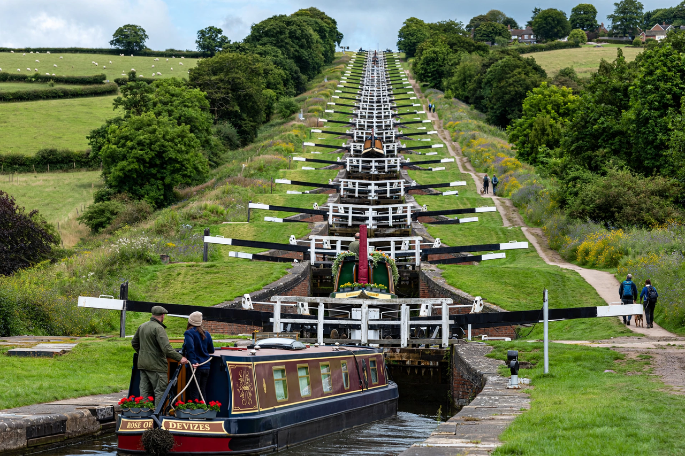

| Kennet and Avon Canal | |
|---|---|
 | |
| Location | Southern England |
| Length | 87 miles (140 km) |
| Locks | 105 |
| Engineer | John Rennie |
| Date completed | 1810 |
| Status | Open (leisure navigation) |
The Kennet and Avon Canal is a waterway in southern England with an overall length of 87 miles (140 km), made up of two lengths of navigable river linked by a canal. The name is used to refer to the entire length of the navigation rather than solely the central canal section. From Bristol to Bath the waterway follows the natural course of the River Avon before the canal links it to the River Kennet at Newbury, and from there to Reading on the River Thames. In all, the waterway incorporates 105 locks.
The canal was surveyed by John Rennie and construction began in 1794 under an Act of Parliament of that year. The eastern and western sections opened by 1800, but the central canal section, including the spectacular Caen Hill flight of 29 locks at Devizes and the Bruce Tunnel under Savernake Forest, was not completed until 1810. The canal carried freight between Bristol and London, including stone, coal and agricultural produce.
The opening of the Great Western Railway in 1841, running parallel to the canal, sharply reduced traffic; the railway company bought the canal in 1852. Commercial traffic dwindled and the canal became derelict in places. A determined campaign by the Kennet and Avon Canal Trust, founded in 1962, led to staged restoration, and the canal was formally reopened by Queen Elizabeth II in 1990. In 2010 the 200th anniversary of its opening was celebrated. The canal is now managed by the Canal & River Trust and is popular for leisure boating, walking and cycling.
Engineering features include the Dundas Aqueduct and Avoncliff Aqueduct, which carry the canal over the River Avon; Crofton Pumping Station, whose steam engines (including an 1812 Boulton and Watt engine, the oldest in the world still in its original engine house and capable of doing its original job) pump water to the summit level; and the Caen Hill locks, one of the longest continuous flights in the country.